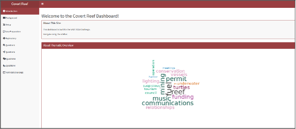
1. Introduction
Accessing the site: https://dreytyw.shinyapps.io/VastChallengeCovertReef/
Purpose & scope: Explain that Covert Reef was created to answer questions in Vast 2025 Challenge.
Navigation overview: Users are told to navigate with the sidebar. It has modules named: Introduction, Background, Setup, Data Preparation, Exploratory, Question1, Question2, Question3, Question4, Visit Vast Challenge.
Thematic Overview: Prepare users on overview of words that will be in the story through a Wordcloud.
2. Background
Introduction to Final Product Tab: Introduces users to the reason the website was created for the Vast Challenge. Provides Background of MC3.
Questions Tab: Provides users with questions posted on MC3.
Data Tab: Provides users with the general dataset information used for VAST Challenge.
Methodology: Users informed about the general use of methodologies and graphs.
3. Setup
Yellow Boxes:
Package checklist: Specified R CRAN supported packages utilized.
Code to load packages: Specified using pacman to check and load packages.
Workarounds: Specified that
magickandwordcloud2may have compatibility or rendering issues within Shiny apps, so usingrenderImage()/imageOutput()andrenderWordcloud2()/wordcloud2Output()ensures smoother, more reliable image and interactive word cloud rendering inside Shiny’s reactive framework.
Green Boxes:
Loading Data: Code chunk used from
jsonlitepackage to import.Defining common variables: User informed that styles and colours were kept as consistent as possible.
Inspecting Knowledge Graph Structure: Users informed that structure of the knowledge graph was first inspected.
Extracting Edges and Nodes Table: Structured JSON files provided in the VAST Challenge 2025 dataset:
mc3_nodes.json: Contains all entities (People, Vessels, Organizations, Groups, etc.)mc3_edges.json: Communication links between entities (Sent, Received, Involved in, etc.)- Users informed that
as_tibble()was used to extract nodes and edges from the raw mc3_data.
Nodes Structure: Users informed that Exploratory summary of nodes data using
SmartEDA::ExpData().Edges Structure: Users informed that Exploratory summary of edges data using
SmartEDA::ExpData().
4. Data Preparation
Nodes cleaning:
- Users informed of the summary of steps applied.
Edges cleaning:
- Users informed of the summary of steps applied.
Communication Extraction:
- Users informed of the logic applied to extract communication data.
5. Exploratory
Node-Level EDA: Users can click the tab to view the overview, distribution of Node Type, Node SubType and, Observations by Node Type.
Edge-Level EDA: Users can click the tab to view the edge attribute overview.
Further Insights: Users can click to see the insight and course of action taken by the team after data understanding from exploring the nodes and edges and other available data.
Knowledge Graph:
- Users can hover over the info icon to learn what to do.
- This is the view by hovering over the Information Icon
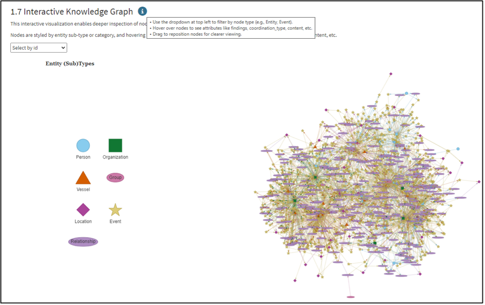
Users can click the drop-down menu to select the unique node, and the interactive knowledge graph will respond to display the direct connections to other nodes. Then users can hover over the stars to read details like communicated content. Using the drop-down menu:
- Click any unique node like Nadia Conti and view the direct nodes.
- Hover over the stars to read the details.
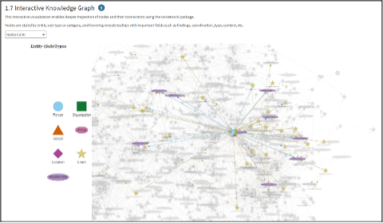
6. Question 1: Communication Analysis
Timeline Table
This shows overall communications.
Widget that filters the Timeline Table
- Use the date range to select time.
- Filter by entity type (Person, Vessel, etc).
- Narrow down by sender or recipient.
- Reset to clear all selections.
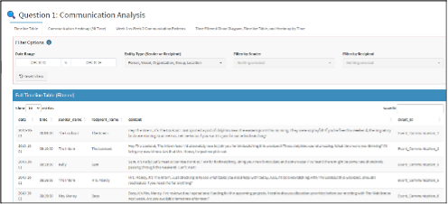
Communication Heatmap (All Time) Tab
Heatmap:
- Hover over to see counts.
Widget:
- Select entity from drop-down.
- Table shows who this entity communicated with most
- Includes number of messages and contact subtypes.
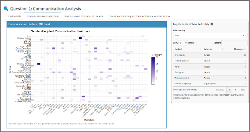
Week 1 vs Week 2 Communication Patterns:
Explain fluctuations between weeks by all or some entities.
- Use the dropdown menu to select one or multiple group(s) (Person, Vessel, etc) to be included into the plot.
- Deselecting all will hide data for that type.
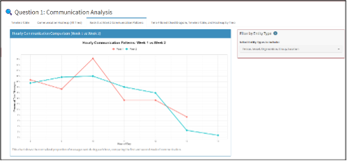
Time Filtered Chord Diagram, Timeline Table, and Static Heatmap by Time:
- Use the drop-down to choose an hourly window
- Chord Diagram and timeline will update based on this hour
- Hover over heatmap to explore message volume by hour/date.
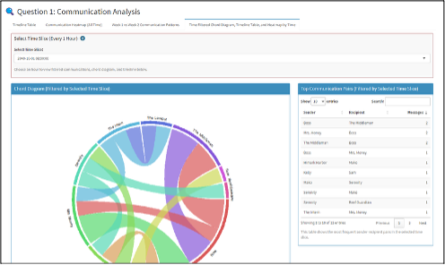
Findings shown here, can be collapsed to view the next Timeline Table.
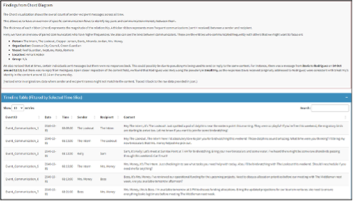
Heatmap is static and not dynamic, as it shows an overview. The weekly dynamic timeline and other dynamic charts already captured similar information.
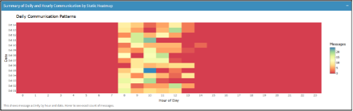
7. Question 2: Topic Clustering & Network Exploration
Person-Vessel Timeline Tab
- Filter Person and Vessel Entities Widget.
- Hover over the icon to get information.
- Use dropdown to select one of more people and/or vessels.
- Use the radio buttons to choose whether to match as sender, recipient or either.
- Use the buttons on the right to:
- Select all People
- Select all Vessels
- Reset all filters
This is the widget:
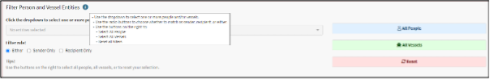
This shows the Timeline of Communication Between Persons and Vessels and Timeline Table will be filtered by the selection.
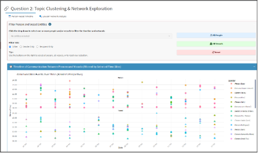
- Within Timeline Table:
- Table headers can be sorted in ascending or descending order.
- Search bar allows keyword searches.
- The timeline of Communication Between Persons and Vessels and Timeline Table will be filtered by the selection from widget or within its own table.
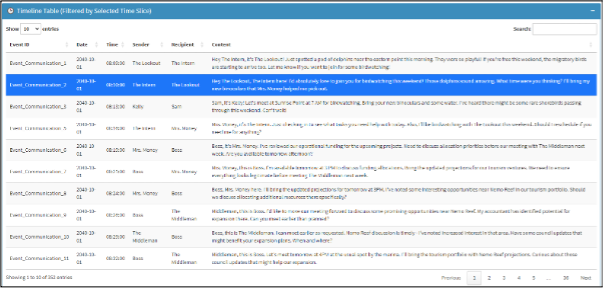
Louvain Network Analysis Tab (All Static Graphs):
- Network Graph: Static Louvain Communities and PageRank Centrality graph for user’s understanding.
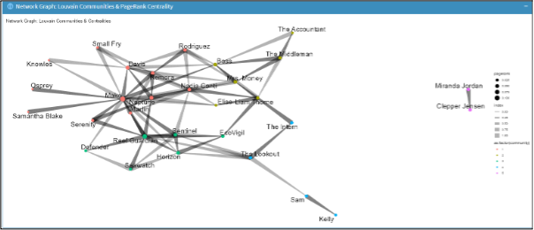
- Top 10 Nodes by Centrality (PageRank, Degree, etc.): For users to understand who are the gatekeepers, high connection nodes, influential nodes, etc.
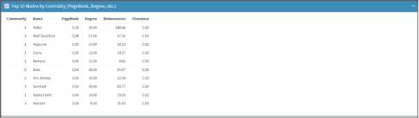
- Key Findings and Interpretation: For user to read the key findings.
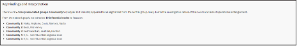
- Wordclouds by Community: For users to understand the top words communicated within each community.
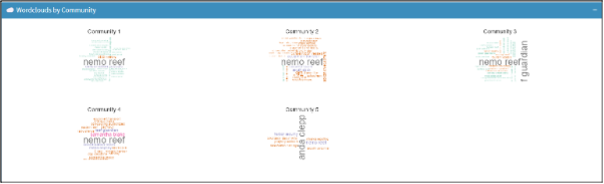
- Top Bigrams per Community (Circular Plot): For users to understand the frequency of the top words communicated per community.
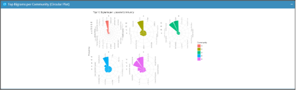
- Community Summary Table: To answer the question on the topic area per group and also understand the membership and group name.
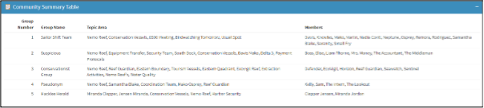
- Key Findings and Interpretations: For users to understand the further insights per community gathered from the community membership and timeline table conversations.
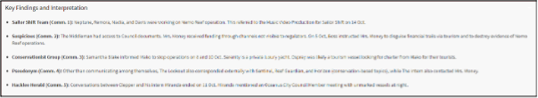
8. Question 3: Pseudonym Mapping: Real vs Observed Identities
Tabs for 3a) to 3c): Explanation and answering of questions in MC3.
Identity Flow Viewer:
Describe alias-mapping logic (time co-occurrence rules).
- This shows how real names map to observed pseudonyms and communities in alluvial diagrams.
Click on the dropdown menu to view the real name -> observed name in the communications -> community they belong to.
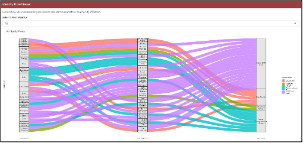
Example of an individual:
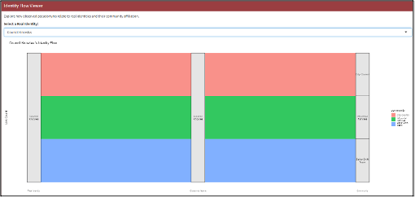
9. Question 4: Nadia-Centric Analysis
Ego Networks: Louvain Ego Network (graph): To view any communities to gain an understanding of possible illicit activity across people.
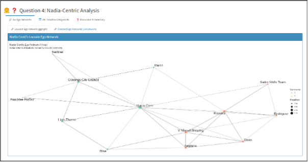
Ego Networks: Directed Ego Networks (visNetwork): Click the drop-down menu to filter by node.
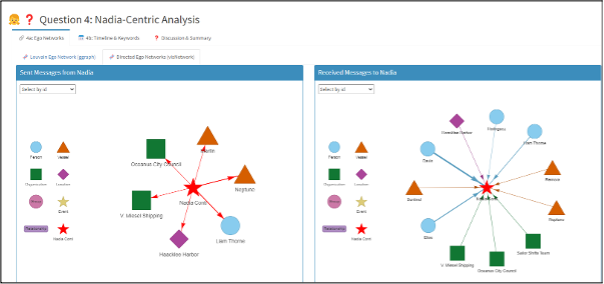
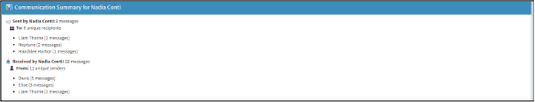
Widget to Filter Suspicious Entities:
- Use the dropdown to select suspicious entities for filtering the 3-Hop Timeline and the Communications Table.
- Show: To control if you want to see all, only suspicious, or non-suspicious communications.
- Filter by role: Sender, recipient, or either.
- Use the buttons on the right to select all people, vessels, organisations, groups, or locations.
- Click ‘Reset’ to clear your filters.
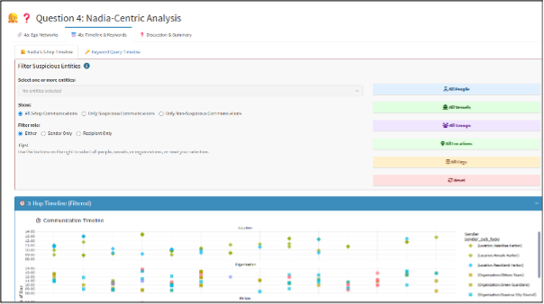
This is the Communication Table which will also be filtered:
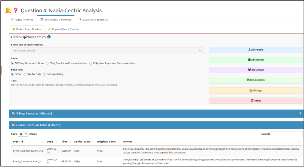
Keyword Query Timeline:
- Click one keyword to show the timeline of messages mentioned with it.
- This will update the keyword timeline plot and filter the communications table below.
- Useful for quickly finding patterns of conversations by day and time tied to specific terms like 1045, Permit.
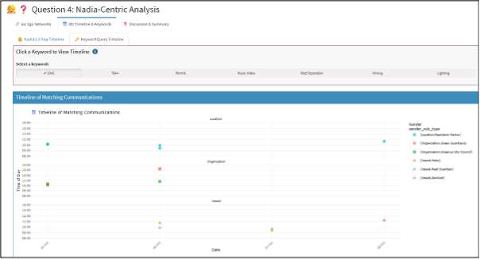
10. Visit Vast Challenge
Users can click on the module, and it will lead them to the VAST challenge website.